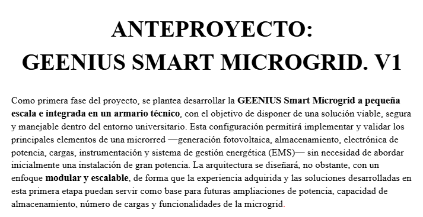
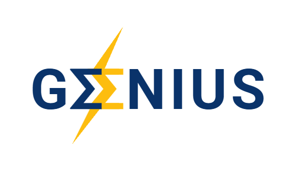

Proyectos Destacados
Fundación de la Asociación GEENIUS
Verano de 2026 - Presente | ETSI (Universidad de Sevilla)Los orígenes: Cómo fundamos GEENIUS
Todo comenzó a principios del verano de 2026. Recién terminados los exámenes en la ETSI, un compañero nos reunió a un pequeño grupo con una idea clara: crear una asociación que sirviera de puente real entre los estudiantes de Ingeniería de la Energía y el sector profesional. La idea nos entusiasmó tanto que decidimos ponernos manos a la obra ese mismo verano.
Durante aquellos primeros meses de creación, mi rol consistió en dar vida y forma a la asociación. Lideré el diseño de nuestra identidad visual creando el logotipo (siempre en conjunto con el equipo), gestioné nuestras primeras publicaciones en redes sociales, y ayudé a redactar los estatutos y a definir el enfoque estratégico que tendría GEENIUS.

De la idea a la ingeniería: Nuestro primer gran proyecto
Aunque al principio todos hacíamos un poco de todo para levantar la asociación, decidí enfocar gran parte de mi verano en liderar el apartado técnico. Como Jefe de Microredes, me uní a otros tres compañeros para desarrollar un anteproyecto completo de una Microgrid. Logramos sacarlo adelante con éxito, convirtiéndose en uno de los proyectos insignia que hoy promovemos desde la asociación.
Además, durante esa etapa técnica, impulsamos y participé en un curso intensivo de 3 días sobre el software fotovoltaico OpenSolar.

Mi rol actual: Acercando la energía a la sociedad
A principios de este nuevo curso, decidí dar un paso estratégico. Pasé el testigo de la jefatura de Microredes (donde sigo colaborando como socio activo) para asumir un nuevo reto: soy el Jefe de la Línea Divulgativa.
Nuestro objetivo actual es traducir y acercar el complejo mundo del sector energético a la sociedad. Como parte central de este nuevo rol, actualmente estoy programando y desarrollando desde cero la página web oficial de GEENIUS, utilizando HTML, CSS y JavaScript desde Visual Studio Code para centralizar nuestra presencia digital y nuestros eventos.
